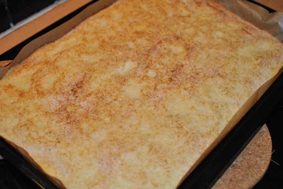

Buttermilchkuchen

- Zubereitung: ca. 15 Minuten
- Backen: ca. 25 Minuten
- Für 1 Backblech
Zutaten
- 450 g Mehl
- 1 Päckchen Backpulver
- 3 Eier
- 375 g Zucker
- 1 Päckchen Vanillezucker
- 400 g Buttermilch
- 100 g Kokosflocken
- 30 g Butter
- 150 g Sahne
- Fett fürs Blech
Zubereitung
- Das Backblech fetten. Den Backofen auf 200° Celsius vorheizen. Mehl mit Backpulver mischen. Eier,
300 g Zucker und Vanillezucker schaumig schlagen. Buttermilch und Mehl unterrühren. Den Teig auf das
Backblech streichen.
- Die Kokosflocken mit 75 g Zucker mischen und über den Teig streuen. Im Ofen (mittlere Schiene) 15
Minuten backen.
- Die Butter mit der Sahne erhitzen, bis die Butter geschmolzen ist. Mit einem Löffel auf der
Oberfläche des Kuchens verteilen. Den Kuchen in 10 Minuten fertig backen.